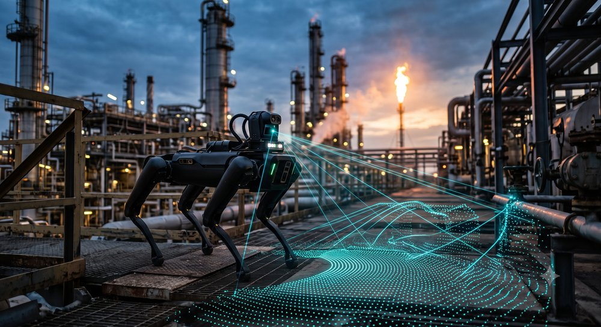
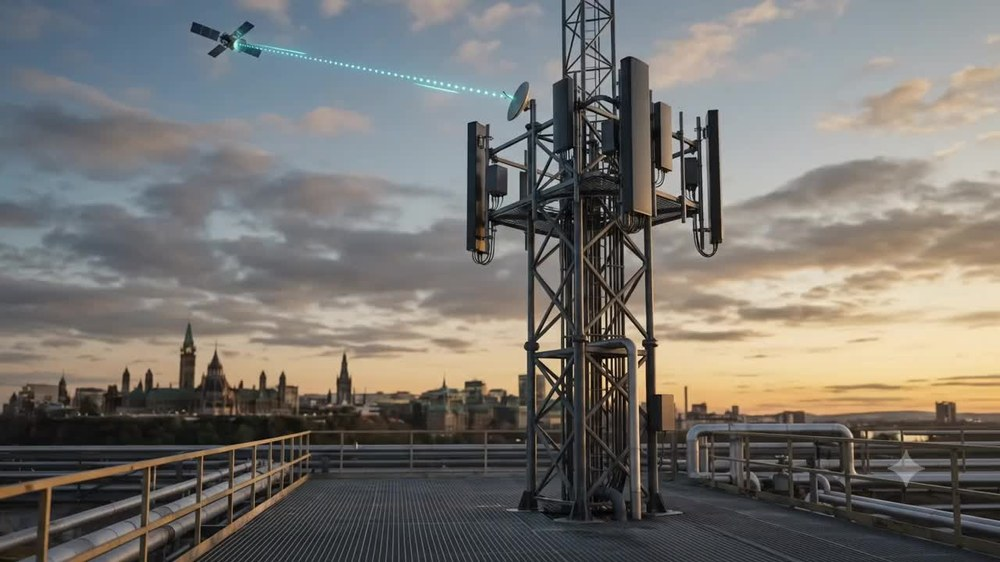
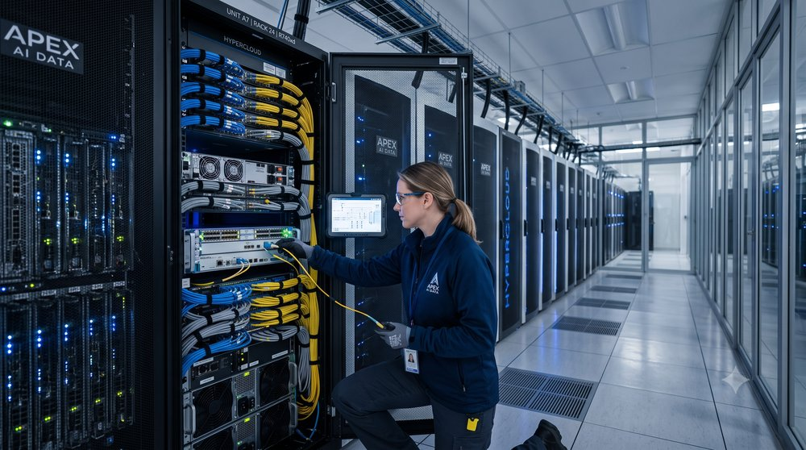

Hi, I'm Jonathan.
I'm a 3rd-year Electrical Engineering student at Carleton University.
I'm passionate about hardware, wireless systems, robotics and artificial intelligence.
A bit about myself
I grew up in Ottawa with a longstanding interest in how things work at a physical and mechanical level. That curiosity shapes how I approach engineering throughout my studies and personal projects. I like taking an idea from a rough sketch to something that actually works, testing it until it breaks or reaches its limit, figuring out why, and then fixing it properly. I've picked up a broad set of practical skills that way and constantly try to gain more experience in whatever ways I can.
Outside of school, I work as a lifeguard, swim instructor, and first aid instructor with the City of Ottawa. I have coached and competed nationally in competitive speed skating, which has helped me build up a good set of interpersonal and self-development skills through both the work and sport avenues. I also have an interest in personal finance and economics, which has grown into a broader curiosity about practical AI and where it genuinely fits into engineering and finance, rather than the superficial hype around it.


Check out my builds!
A growing list of different projects and challenges that I have tackled - click "View Project →" on any card for the full story, photos, and what went wrong along the way.

Modular Bicycle Lighting System
Designed and built a weatherproof RGBW lighting system for bicycles.
View Project →
C-130 Autonomous RC Drone
Building the flight controller and RF system for an autonomous RC drone.
View Project →
MOSFET x Off-Road System
Integrated high-power LED lighting into a vehicle using MOSFET switching.
View Project →
AI Agent Secretary
Customized a personal AI agent to automate everyday tasks through the Hermes framework.
View Project →Tools & technical proficiencies
Design
- Altium Designer
- KiCad
- Autodesk Fusion CAD
- Component Selection
- Breadboarding
Programming
- C / C++
- Verilog HDL
- Python
- Jupyter Notebook
- Java
- Git Version Control
Platforms, Testing & Simulation
- Arduino
- Raspberry & Orange Pi (Linux)
- STM & ESP32
- FPGAs & AMD Vivado
- Oscilloscope / Multimeter
What I'm keeping an eye on

Cutting-Edge Robotics
Legged and humanoid robots closing the gap between lab demos and real-world deployment. I'm most interested in advancements with actuator technology and integrations with machine learning.

RF & Space Communications
6G and IoT requirements are pushing wireless communication to its limits. I have a fascination for satellite constellations and am keen to understand antenna designs and endless uses for wireless communication.

AI & the Road to AGI
Looking past the buzzwords, I am excited to see the real use cases for AI systems within certain sectors like transport, industry, chip design and global finance. I am trying to embrace tools as they become available and learn how they can become powerful personal and corporate systems.
Let's connect.
I'm currently looking for a 2027 Summer Co-op placement. Always happy to talk about a project, a role, or just electronics and technology in general.